External Tour
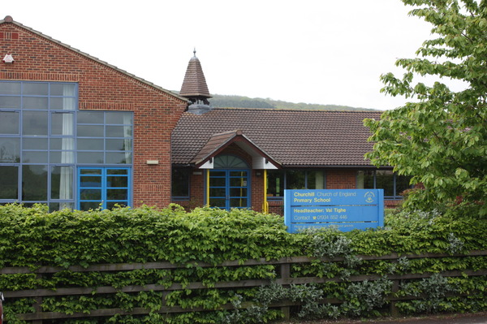
The front of our school, a green and leafy place nestled in the Mendips.
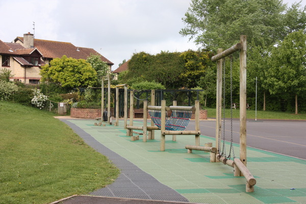
Our trim trail. Can you do the monkey bars?
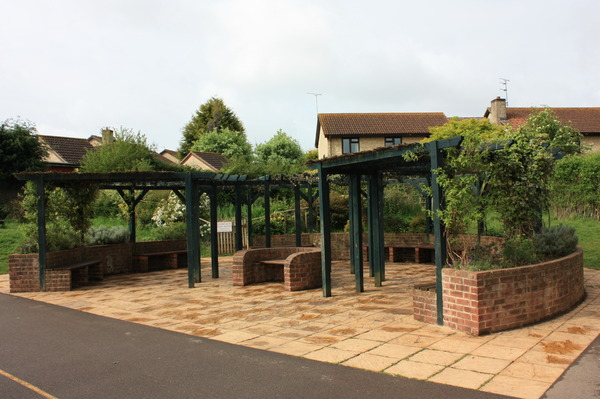
Our pergola. A shady place to sit and chat when its sunny.
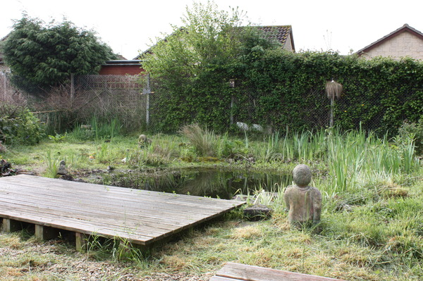
Our wildlife pond. A favoured haunt of our local heron.
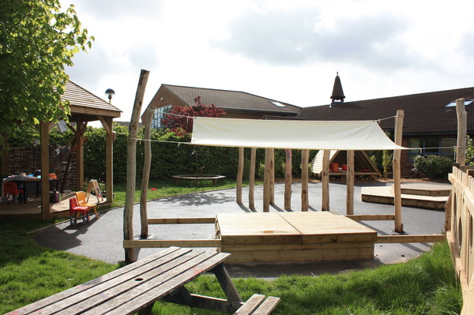
Foundation playground. Completed in 2008. A fantastic new resource for our youngest students.
Bishop's Service

The Diocese of Bath and Wells are celebrating their 11th centenary. Bishop Peter Price plans to walk around
the entire diocese visiting every deanery.

The twelve Church of England Schools in the deanery were invited ...

... to a service at St Paul's Church Weston Super Mare.

Each school had to offer their own presentation on 'celebrating what it means to be a C of E school in
this Diocese'. Year 5 created a rap.
N. Somerset Music Department

North Somerset Music Department sharing their extensive musical expertise playing different instruments

A variety of well known Television theme tunes were played. Which one was this, Eastenders or Match of the
Day?

Even the recorder was included!

Comparing different instruments

This looks an interesting instrument - the common garden hose!

Actions by the pupils as well!
Folly Farm
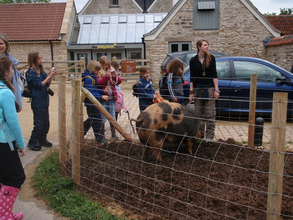
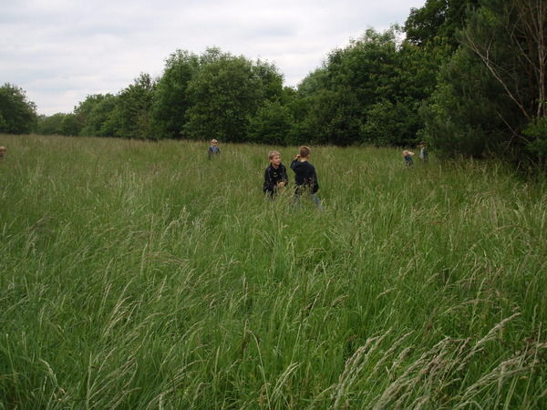
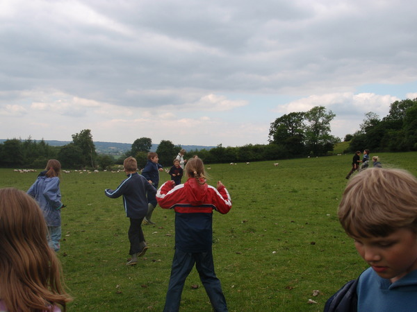
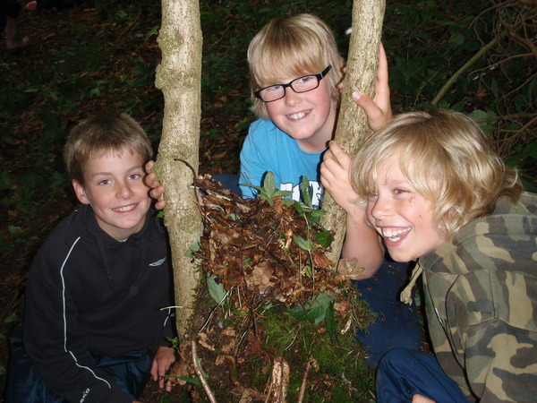
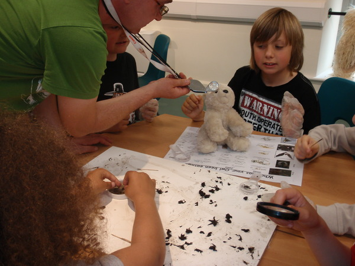
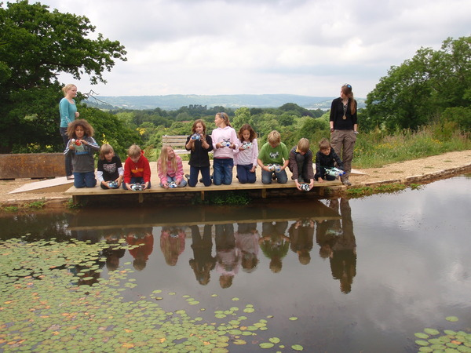
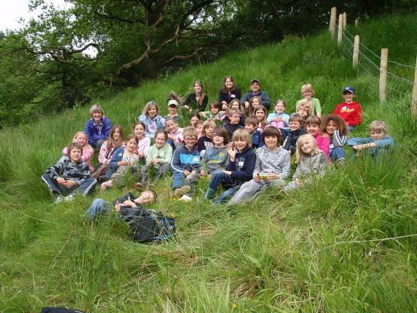
Mad Scientist visit"

The Mad Scientist kept Churchill pupils engaged in her experiments to show how air pressure works.
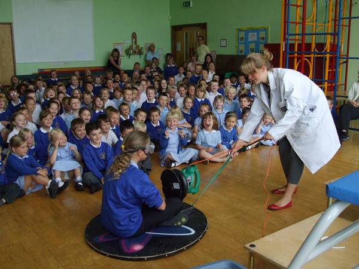
The hovercraft uses a leaf blower to create the air flow.
Summer Fayre 2009
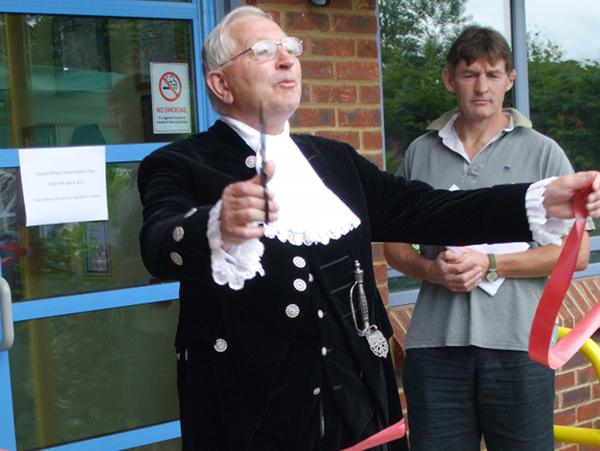
On Saturday 11th July 2009 Churchill Primary opened it's doors for our annual Summer Fayre. Although the
weather was not great, over £2000 was raised.
This year our Fayre had a village show theme, with traditional categories including ...

... animals made from vegetables, ...
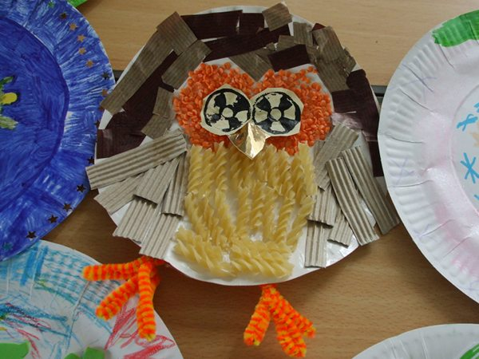
... decorated plates, ...
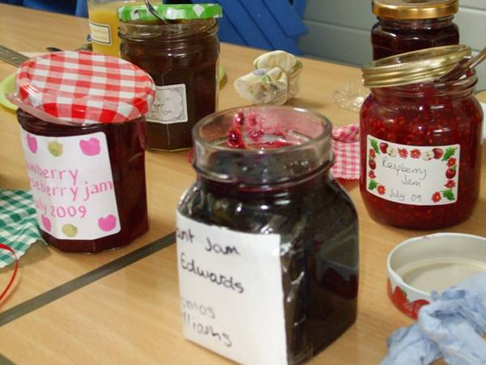
... jam making ...

... and the hotly contested "men's victoria sandwich".
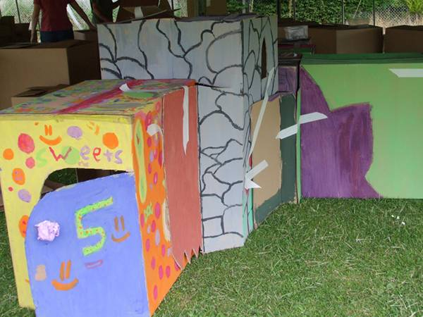
Box City proved a great delight with children and their parents as they used all their building skills to
create a rabbit warren city.
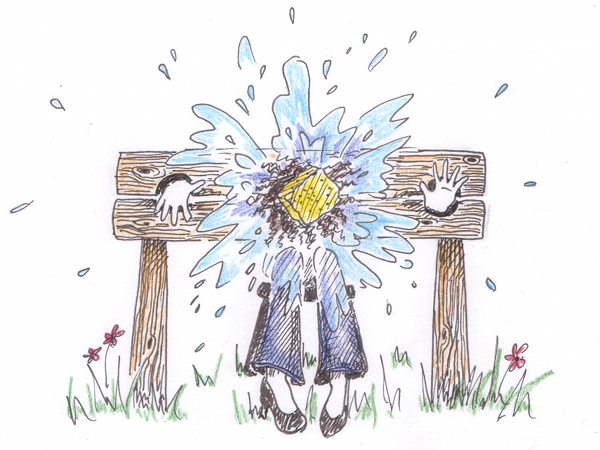
The highlight of the day was when our head teacher, Mrs Tighe, went into the stocks. Over £100 was raised on
this stall alone. Mysteriously, no photographic evidence of the event remains. Luckily, our resident artist was on
the scene!
Miss Lewis's Retirement Service
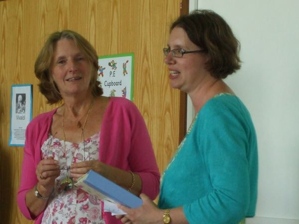
On 22nd July Ms Josky (right) led the school in a special service to say "au revoir" to Miss Lewis (left) who
is retiring after 13 years with the school.

Miss Lewis has always brought a taste of the continent to the school, and in celebration of this she was
presented with a Café style table and chairs to enjoy her coffee and croissant at in the years to come.
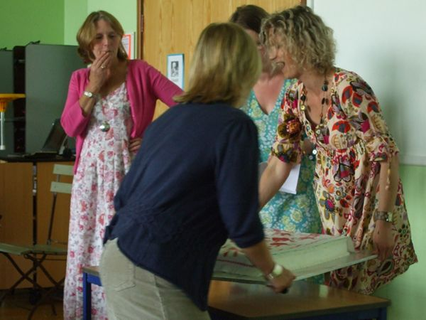
After some slightly fraught delivery work...
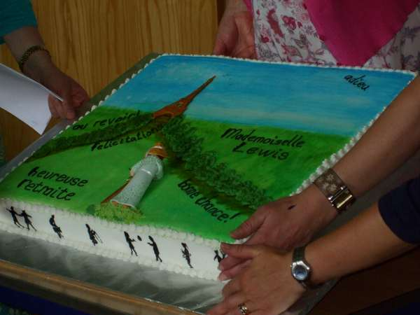
... Miss Lewis was presented with a cake, crafted by Mr Marlow.
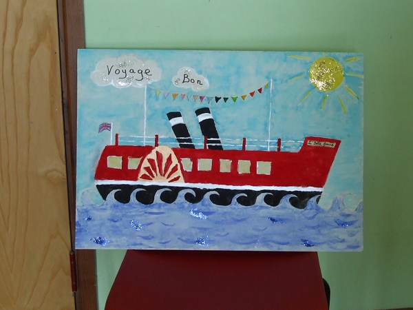
The day before, at their end of year service, Key Stage 1 presented Miss Lewis with a beautiful card consisting
of a giant dandelion made from painted handprints. Key stage 2 were not to be outdone, presenting Miss Lewis with
this "Bon Voyage" card.

Each class created a page for the card, with a personal picture and message from every pupil.
Harvest 2009
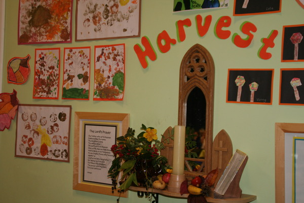
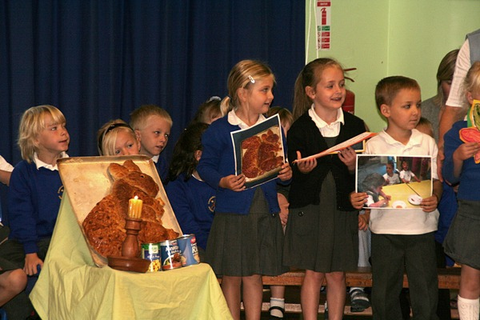
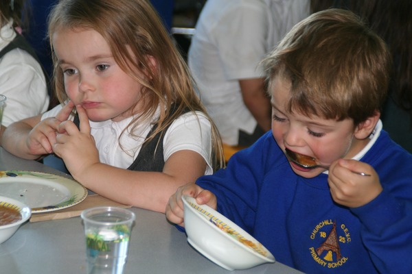
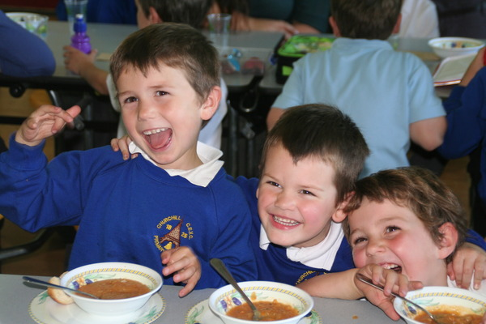